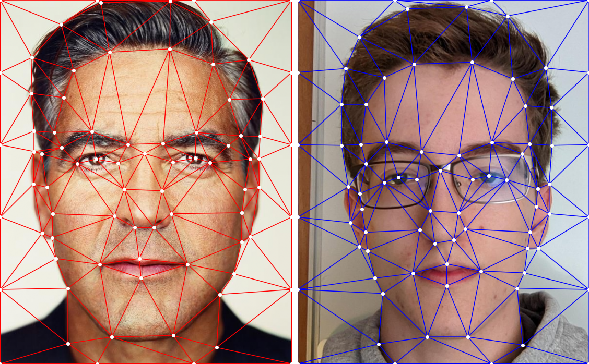
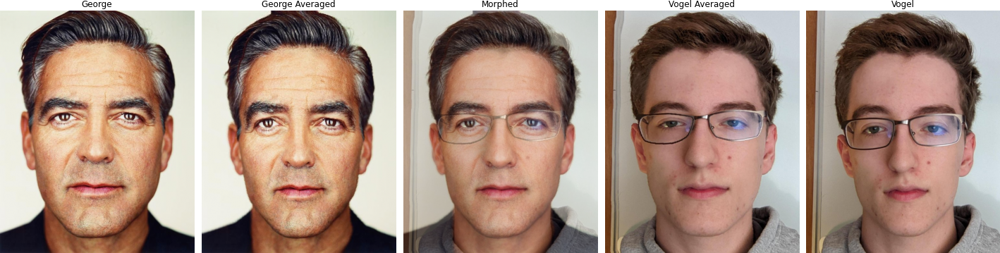
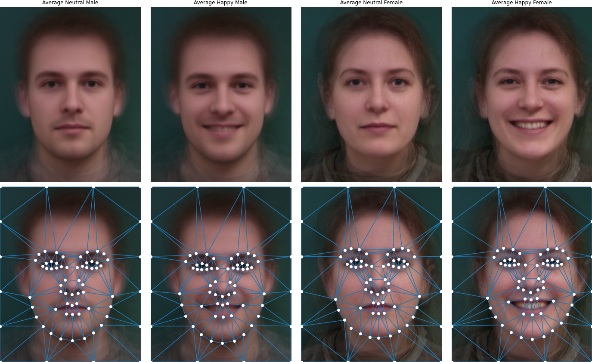
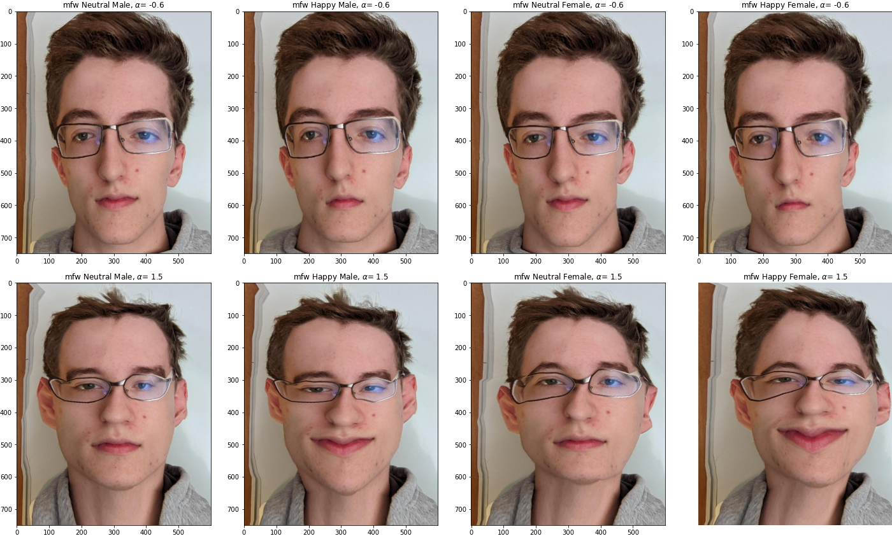

Defining Correspondences
To go about morphing two (face) images together, we must first must create pairs of points corresponding to equivalent features we interpolate between. This involves manually labelling each image with 63 points, and in a specific order. The order is important because the images are not necessarily aligned, and even if they were there is enough spatial variation between the features that cannot naively choose the closest point. I learned this the hard way after selecting the points in the wrong order, and rather than taking a minute to reselect the points I spent an hour implementing a KDTree such that the points could be iterated over, each pass picking the pair closest to one another and no one else.
After the points are chosen, additional points are added around the border of the image. This is done so that the entire image, and not just the facial features, are interpolated. Next a Delaunay triangulation on the average of the points is created as it produces minimal small-angle triangles.

Computing the "Mid-way Face" and the Morph Sequence

The "Mean face" of a population
Using the Dane's dataset the mean face of the 'population' can be calculated. This is accomplished by averaging the points of each face, and then using the same process as above to generate the mean face.
Caricatures: Extrapolating from the mean
Normally, when we interpolate between images our $\alpha \in [0, 1]$ where $0$ corresponds to the first image's original and $1$ the second's original and everything else a stage of the morph sequence. We can extend this outside of the normal range to obtain 'caricatures':
Bells and Whistles
Rather than using a linear interpolation, I implement a sigmoid function to smooth the transition. This has the effect of making $\alpha$ spend less time at the most unnatural looking frames (around the middle) and more time around the edges of 0 and 1. Below are a comparison, the top with 30 frames/second and the bottom with 10.